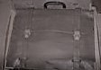

выпуск от второго сентбря 1985 года
ДО НОВЫХ ВСТРЕЧ, СПАРТАКИАДА
В Перми завершилась VIII
зимняя Спартакиада
народов РСФСР. Итоги этих
соревнований по просьбе
нашего нештатного
корреспондента В.
Найпака подводит
главный судья Спартакиады,
первый заместитель
председателя
Спорткомитета РСФСР А. КУЗНЕЦОВ:
- Традиционные
всероссийские спартакиады -
и зимние, и летние - одна из форм
наиболее массовых комплексных
соревнований по самым
популярным видам спорта,
входящим в программу
Олимпийских игр. Все спартакиады
республики проходят в
несколько этапов и становятся
всесторонними смотрами
физкультурно-массовой и
спортивной работы. Вот и VIII
Спартакиада позвала на
старт более 40 миллионов человек.
Нынешняя Спартакиада
была посвящена 40-летию
Великой Победы.
- Какова была,
спортивная программа
Спартакиады?
- Одной из ее особенностей стало
сокращение числа участников
финальных состязаний. Это
произошло в связи с более тщательным
отбором финалистов,
повышением требований к их
спортивной квалификации.
Расширена программа
соревнований. В нее были
включены альпийское двоеборье и
слалом-гигант. Проведение столь
представительного
спортивного форума
позволило значительно
укрепить спортивную базу, создать в
различных точках России
своеобразные региональные
центры. Пермяки, к примеру,
получили новый Дворец спорта,
отличное биатлонное стрельбище,
лыжный стадион. В городе
Чайковском построен новый
90-метровый трамплин.
- Открытие новых имен, талантов
- добрая традиция спартакиад.
Кто отличился в стартах на
уральской земле?
- Из участников Спартакиады
отмечу лыжников москвичку
Ираиду Клягину, Андрея Павлю-ка
из Магадана, конькобежцев
Андрея Ермолина из
Челябинска, Андрея Боброва из
Кирово-Чепецка, горьковчан
Игоря Калугина и Галину
Акимову, биатлонистов
Анатолия Ждановича из
Новосибирска, Вадима
Овчинникова из
Кирово-Чепецка, двоеборца
Андрея Дундукова из Москвы,
саночников из Брянска Игоря
Уткина и Андрея Трудова,
ленинградских фигуристов
Ирину Бечке и Валерия
Корниенко, 14-летнюю
горнолыжницу из города
Чусового Олю Курадченко,
удостоенную серебряной
медали в соревнованиях
взрослых. Все они проявили
настоящий характер. Дерзость
молодых в сочетании с опытом
и самоотверженностью
титулованных Раисы
Сметаниной, Ольги Плешковой,
Владимира Никитина,
Владимира Аликина создали
замечательную атмосферу
товарищеского соперничества.
ТЕПЕРЬ ВРЕМЯ СБОРНОЙ
Спустя одиннадцать лет женская
волейбольная команда ЦСКА
вернула себе титул сильнейшей
в стране. На последнем финальном
туре четырех лучших клубов в
Минске, который закончился
10 марта, армейские спортсменки
в решающем поединке за золотые
медали нанесли поражение
свердловской "Уралочке" - 3:2.
Вот как выглядит итоговая таблица
команд, оспаривавших медали:
Cтарший тренер женской сборной СССР,
заслуженный тренер СССР В. Паткин
прокомментировал ситуацию
корреспонденту "Известий":
Нынешний чемпионат страны
прошел в интересной, острой борьбе.
Этому во многом способствовала
новая система проведения
первенства. Высокая цена
победы потребовала от
команд игры с полной отдачей
сил на всех этапах. Больше стало матчей
напряженных, боевых, когда
победитель определялся
только в заключительной пятой
партии. А в таких встречах
закаляется характер
молодежи, растет ее мастерство.
Успех ЦСКА закономерен. За
короткий срок опытным наставникам
армейского клуба В. Книгеру и Ю.
Старунскому удалось сплотить
коллектив, поставить его игру на
современную основу. Радует,
что быстро обрела уверенность
молодежь ЦСКА. А 18-летняя Д.
Качалова стала настоящим
лидером команды вместе с опытной
С. Сафроновой.
Неплохо провела чемпионат
свердловская "Уралочка".
Здесь по-прежнему тон задают
волейболистки сборной страны
В. Огиенко, И. Кириллова,
Е. Волкова. Трудным был сезон для
алма-атинского АДК. Прошлогодние
чемпионки СССР, кстати, только
второй год выступающие в
высшей лиге, на сей раз довольствовались
бронзовыми медалями. Но
команда демонстрировала
хорошую игру. К тому же в активе
АДК - победа в Кубке европейских
чемпионов.
ДВА ПОРТФЕЛЯ УЧЕНОГО

Около двух столетий пролежали
в фонде №20 Ленинградского
отделения архива Академии наук
СССР знаменитые "портфели
служебной деятельности"
Михаила Васильевича
Ломоносова. Время
настоятельно
потребовало вмешательства
реставраторов.
Ценнейшие рукописи,
заметки, документы, письма,
хранившиеся в портфелях,
нуждались в восстановлении.
За это тонкое и кропотливое дело
взялись наиболее опытные
художники-реставраторы и другие
специалисты - сотрудники
Академической лаборатории
консервации и реставрации
документов в Ленинграде.
Им повезло с самого начала:
материалы, связанные с
именем основоположника
отечественной науки, были
написаны на так называемой
тряпичной бумаге, способ
ствовавшей длительному хранению.
С помощью новейшей техники и
методов устранились обветшалые
углы и края страниц, трещинки,
разрывы, возникшие на листах,
ликвидировались дефектные
места, закреплялись тексты.
Руководитель
реставрационной группы
лаборатории кандидат
химических наук К. Андреева
со своими коллегами Н. Лесняк
и С. Тамаровой возродили
более 850 листов различных материалов
и документов, относящихся
к жизни и творчеству великого
Ломоносова в период с 1724-1765 годов.
СООБЩАЕТ ГИДРОМЕТЦЕНТР СССР
Миновала первая декада
марта, а весна с трудом пробивает
себе дорогу. На европейском
континенте господствует
область высокого давления,
что обусловливает
относительно холодные ночи
и постепенный прогрев воздуха
днем. Лишь на севере и юге Европы
погоду определяют циклоны.
На Скандинавию с большой скоростью
вторгается воздух Атлантики,
в прибрежных районах ветры достигают
штормовой силы. Теплый и влажный воздух принес
значительное повышение температуры
и на север европейской части СССР. где днем всего 2-5
градусов мороза. Это теплее, чем на юге Украины и
Северном Кавказе, где сохраняется холодная
погода. Лишь на Черноморском побережье
'Кавказа днем 5-8 градусов тепла.
В Москве 12 марта днем 1-3 градуса
мороза, без осадков, ветер южный.